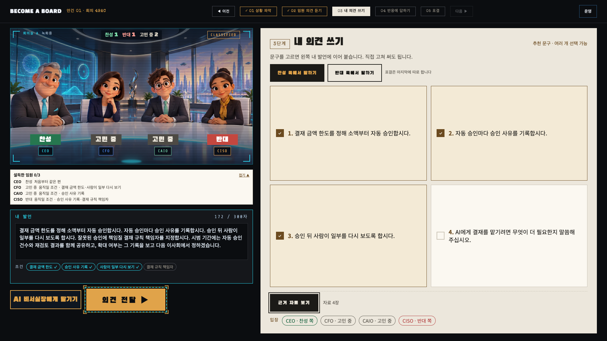
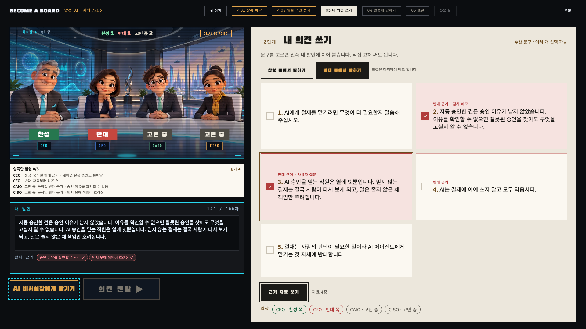

무엇을 결정할까요
안건은 두 개입니다. 체험을 시작하면 하나를 골라 AI 임원 네 명과 토론합니다. 기다리는 동안 상황과 근거 자료를 미리 읽어 두면 의견 쓰기가 훨씬 쉬워집니다.
AI 에이전트에게
결재권을 줄까
결재는 쌓이는데 담당자는 자리에 없다
- 상황
- 비용·휴가·구매 같은 결재가 하루 수십 건씩 쌓입니다. 결재자가 없으면 며칠씩 멈춥니다.
- 제안
- 정해진 범위의 반복 결재를 AI 에이전트가 직접 승인한다.
- 미정
- 결재 범위와 금액 한도
- 잘못 승인했을 때 책임
- 사람이 다시 보는 절차
근거 자료
화면의 근거 자료 보기에서 다시 볼 수 있습니다- 근거1결재 처리 기록
비용·휴가·구매 같은 결재가 한 달에 천 건 넘게 쌓입니다. 담당자가 없으면 사흘 가까이 멈춥니다.
- 근거2시범 자동 승인 결과
한 부서에서 30만 원 이하 비용 결재를 AI가 자동 승인해 봤습니다. 310건 중 4건이 규칙을 벗어났습니다.
- 근거3감사 메모
자동 승인한 건에는 승인한 이유가 남지 않았습니다. 나중에 감사할 때 이유를 확인할 수 없었습니다.
- 근거4사용자 설문
결재를 기다리다 일이 늦어진 사람이 열에 여섯입니다. AI 승인을 믿는 사람은 열에 넷뿐입니다.
데이터보다
경험이 중요할까
데이터는 반대, 베테랑은 찬성
- 상황
- 중요한 의사결정마다 데이터와 베테랑의 생각이 다릅니다. 그때 누구 말을 따를지 정한 규칙이 없습니다.
- 제안
- 중요한 의사결정에서는 데이터보다 경험 있는 사람의 판단을 우선한다.
- 미정
- "중요한 의사결정"의 기준
- 경험을 우선할 때 데이터는 어떻게 쓰나
- 판단이 틀렸을 때 되짚는 방법
근거 자료
화면의 근거 자료 보기에서 다시 볼 수 있습니다- 근거1지난 2년 주요 결정 돌아보기
지난 2년간 큰 결정 18번 중 7번은 데이터와 베테랑의 생각이 달랐습니다. 그 7번 중 경험이 4번, 데이터가 3번 맞았습니다.
- 근거2신규 사업 예측 보고
데이터 모델은 지난 3년 자료로 배웠습니다. 새 시장이나 법 변화 같은 처음 겪는 일에는 틀림이 두 배로 커집니다.
- 근거3베테랑 인터뷰 메모
경험 많은 다섯 명 중 네 명이 판단 이유를 말로 설명하기 어렵다고 했습니다. 판단은 빨랐지만 기록은 남지 않았습니다.
- 근거4실패 사례 메모
데이터가 위험하다고 했는데 경험을 따라 진행해 손해 본 일이 한 번 있습니다. 데이터만 믿고 현장 경고를 놓친 일도 한 번 있습니다.
★
TIP
이사님 포함 같은 표가 3석 이상이면 승리. 찬성이든 반대든 괜찮습니다.
고른 쪽 추천 문구를 다 담으면 내 발언 아래 조건 줄에 이런 표시가 붙습니다. 이 조건이 임원의 마음을 움직입니다.


① 조건 추천이 아직 설득 안 된 임원과 그 임원을 움직일 조건을 알려 줍니다.